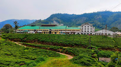
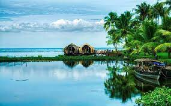
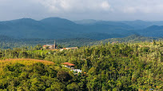

KERALA
Kerala, a state on India's tropical Malabar Coast, has nearly 600km of Arabian Sea shoreline. It's known for its palm-lined beaches and backwaters, a network of canals. Inland are the Western Ghats, mountains whose slopes support tea, coffee and spice plantations as well as wildlife. National parks like Eravikulam and Periyar,
plus Wayanad and other sanctuaries, are home to elephants, langur monkeys and tigers. .
FAMOUS TOP 3 TOURIST PLACES TO VISIT IN KERALA
- MUNNAR

- KOCHI

- WAYANAD

FAMOUS FOOD IN KERALA
- Puttu and kadala curry: This is a breakfast staple eaten all over the state. Puttu is a cylindrical steamed rice cake cooked in a mould with grated coconut. It's usually served with kadala curry, a dish of black chickpeas made with shallots,
spices and coconut milk, that can also be served with ripe bananas and grated coconut.
- Appam with stew: Appam is a Keralan staple made from fermented rice flour and coconut milk. It’s similar to a thin pancake with crispy edges. These crepe-like bowls are made from fermented rice flour, coconut milk, coconut water and a little sugar.
Ishtu or stew is a derivative of the European stew and consists of coconut milk, cinnamon, cloves and shallots, eaten with appams.
- Karimeen pollichathu (fish): This is one of Kerala’s traditional delicacies. Karimeen or pearl spot fish is a speckled fish commonly found in the backwaters of this state.
This is traditionally a Syrian Christian delicacy but has become part of Kerala’s rich cuisine